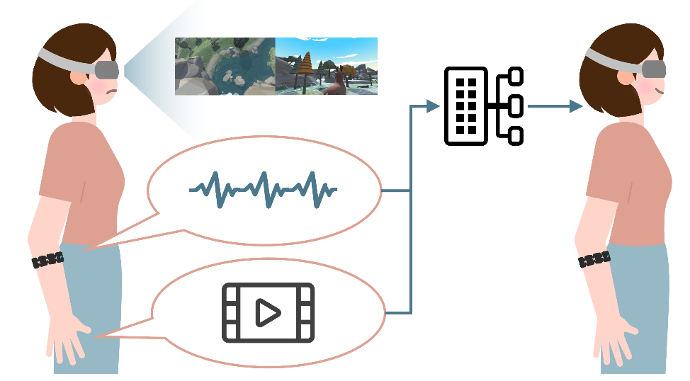

Ying Zhong (钟颖)
About Me
Cinephile; Cat person; Chinese rock music fan
Educational Background
|
|
Master Candidate Beijing Film Academy (2022 ~ 2025)
|
|
|
Bachelor Bejing Film Academy (2018 ~ 2022)
|
Publications
|
 |
The Correlation Analysis between Cybersickness and Postural Behavior in Immersive Viewing Experience
Ying Zhong, Ke-Ao Zhao, Leping Zhang, Fangming Zhao, Wentao Wei, Feilin Han
Under Review
|
Others